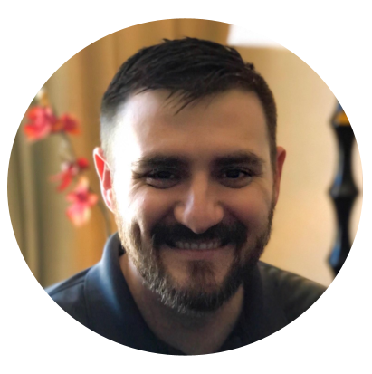

Welcome to the Cybersecurity Spec Trial Day
Introduction to the Cybersecurity Specialization
Background
Cybersecurity has been an important part of technology since computer networks have existed – for about 50 years. Over time, as the Internet and connectivity in general have grown, security needs have grown right along with them. Cybersecurity encompasses protecting hardware, software, and data from attacks, theft, disruption, and damage. Security engineers are tasked with making sure systems are dependable and safe.
Introduction to Specializations
During Specializations, you will take a huge step towards your career in tech by not only attaining skills in a particular technology area or stack, but also by getting accustomed to a new work style that resembles the way you will work and learn in your first job. Your coding bootcamp experience is technically over, and now you will begin your journey within the technology industry.
Throughout your career as a Security Analyst or Engineer, you will need to continue to learn and gain new skills. Developers will do this by carefully researching new technologies, following online video tutorials, and practicing learned concepts. We designed the Specializations program to mimic that learning experience. To do this, we’ve leveraged a combination of video learning and carefully curated exercises. We also provide support through multiple avenues including: daily stand-ups with your Tech Lead, weekly review sessions, weekly one-on-one meetings with your Subject Matter Expert (SME), and queue support during your class hours.
While this new learning environment will help prepare you for your first role and continued learning, it will also present unique challenges for you to conquer. Some of these challenges include: time management, self-awareness, and video fatigue. Overcoming these challenges at Devmountain, while you have support, will help build the foundation for your growth as an engineer.
What You Will Learn
This course prepares students with the knowledge and skills to start a career as a Cybersecurity Analyst or Cybersecurity Engineer, providing all requisite knowledge of modern security practices, attack prevention, access management, and incident response.
In this course, you will learn about the following:
Basic Security Concepts
Network Security
DevSecOps
Threat Intelligence
Attack Vector Analysis
Vulnerability Management
Digital Forensics
Decision-Making
Incident Response & ISO
Creating Security Policies
Staff During Specializations
Tech leads provide guidance, industry knowledge, and leadership during Specializations. They are the primary leader throughout the day for students and ensure that students are progressing with the support that they need. Tech Leads manage 1-2 technical programs and communicate directly with Subject Matter Experts to escalate student questions. They run daily Scrum Meetings, check in with students frequently, and monitor student progress. They also help to maintain and update curriculum for their area(s).
Fun Fact: The role of the tech lead is modeled after the Team Lead in the tech industry. A Team Lead is traditionally someone who is both an individual contributor but also coordinating with team members and tracking and driving overall progress. While Team Leads are proactive in their communication, it’s also important for the rest of the team to be proactive in keeping the Team Lead up to date on blockers, progress, and other general information. Tech leads do this and that…
Subject Matter Experts answer student questions and provide feedback to students on their comprehension of the material during weekly meetings. You can expect at minimum one hour of one-on-one time with a SME each week during specialization, in addition to any escalated questions you have the SMEs might answer either individually or with the group based on collaboration with the Tech Lead.
Fun Fact: The SME role is modeled after Senior Engineers and SMEs (same name) within the tech industry. In a real engineering org, SMEs and Senior Engineers are called upon to enable mid or junior level folks when they run into blockers. As part of Specializations, you have the oppportunity to work with real Subject Matter Experts with years of experience in the tech industry. Not only will you learn things from them, you will also learn how to advocate for yourself effectively. Working with SMEs on a less frequent basis than staff during Foundations will enable you to build independence and confidence that will be invaluable when you begin your first role within the tech industry.
Your Cybersecurity Team
Below are some of the amazing staff that you’ll be working with during Specs!
Chalon Hutson - Cybersecurity Tech Lead
Get to Know Chalon: “I love to deep dive into unique bugs and problems. Also, I have an adorable cat named Mises.”
Advice from Chalon: “If I could go back and talk to myself while in bootcamp, I would emphasize the importance of understanding the benefits/downsides of each major datatype and simple data-structure.”
Favorite thing about work: “Watching students get excited about technology, and watching when a concept clicks and they feel confident in doing it on their own.”
Jacob Craner - Cybersecurity Subject Matter Expert
7 years experience with Cybersecurity
Currently Computer Science & Information Technology Teacher with Davis School District
Earned a Masters Degree in Cybersecurity
Jaime Ramos - Cybersecurity Subject Matter Expert
Over 20 years programming experience and information management experience
Currently Senior Technical Analyst Engineer III at Oracle
Earned a Masters Degree in Information Security
Trial
Structure
Watch content on Pluralsight to familiarize yourself with Vulnerability Management.
Complete the exercises on InfoSec.
Reflect on your experience.
Watch
Head to this link to watch a course called “Vulnerability Management: The Big Picture”.
Here’s the description for this course: Keeping an information system secure is an essential and continual process to stop potential threats. In this course, Vulnerability Management: The Big Picture, you’ll learn the vulnerability management process and how it fits into an information security plan. First, you’ll discover the importance of conducting regular vulnerability scans. Next, you’ll explore how to prioritize vulnerability remediation. Finally, you’ll delve into some tools that are available to help you automate these processes. By the end of this course, you’ll have developed a deeper understanding of the basics of the vulnerability management process and the importance of its implementation.
Project Setup
Contact your instructor to get an access code for the labs.
Overview
InfoSec is a service that our Cybersecurity students use to complete labs. The labs provide detailed instructions and a sandbox environment in which to practice the things that you will be learning.
Info on the first lab: Students will examine a network breach and be able to identify the indicators of a compromise using a variety of command line and GUI (graphical user interface) utilities that will provide detailed information about the attacker’s foothold into a compromised Windows Server.
Info on the second lab: In this lab you, will take advantage of the lack of disk encryption and exploit a local system. When the operating system is not encrypted, an attacker with physical access can leverage this to their advantage and gain access to your system using a number of freely available tools. Various tools such as Live DVDs or even the Windows recovery console can provide ways for the attacker to see the files you have on your system as well as download or upload malware and run it on your system.
Instructions
Complete the first lab, found here: Finding Malicious Indicators
Complete the second lab, found here: Local Operating System Exploitation
In a personal document, write down some of your thoughts on Cybersecurity.
What did you like about Cybersecurity? What didn’t you like?
What would pursuing Cybersecurity look like for you?
Congrats!
Nice work! You’ve completed the Cybersecurity Spec Trial Day. You should now have a better understanding of what Cybersecurity is all about and if it’s the specialization that you’d like to pursue. If you have questions, please reach out to the Cybersecurity Tech Lead.